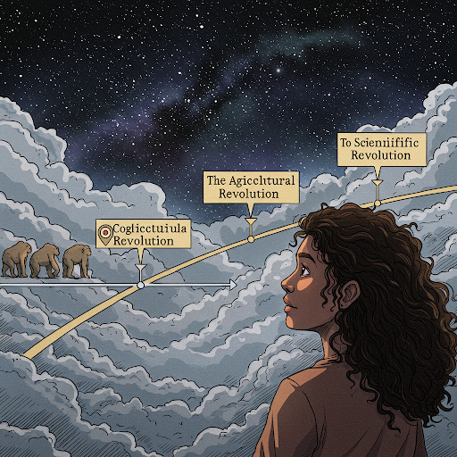

사피엔스
목차
작가
유발 하라리
출판일
2011년 (히브리어), 2014년 (영어)
감상평에 대한 AI 그림
사피엔스는 인류의 역사를 세부적으로 알려주며 우리가 당연하게 여겼던 것들에 대해 생각하게 하는 시간을 가지게 한 책이었습니다.

감상평에 대한 AI 평가
✨ **인류 역사의 거시적 조망:** '사피엔스'는 인류의 역사를 인지 혁명, 농업 혁명, 과학 혁명의 세 가지 주요 혁명을 중심으로 설명하며, 인류의 과거, 현재, 미래에 대한 폭넓은 시각을 제공합니다.
✨ **허구의 힘에 대한 통찰:** 인간의 상상력이 어떻게 거대한 사회적 구조와 협력을 가능하게 했는지를 분석하며, 허구의 힘이 인류 역사에서 얼마나 중요한 역할을 했는지 보여줍니다.
✨ **미래 사회에 대한 질문 제기:** 인류의 미래에 대한 다양한 질문을 던지며, 독자들에게 깊은 사유를 유도합니다. 특히, 인공지능과 생명공학의 발전이 인류에게 어떤 영향을 미칠지에 대한 질문은 매우 시사적입니다.